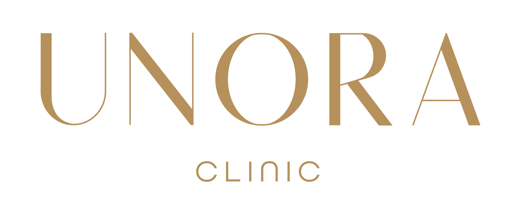

Na Unora, saúde, metabolismo e composição corporal são cuidados de forma integrada.
Um olhar médico que considera as diferentes dimensões da saúde e compreende cada paciente em sua individualidade.
Clínica
A Unora Clínica nasceu com a proposta de oferecer um cuidado médico que considera o corpo em sua complexidade.
Saúde metabólica, hormônios, composição corporal e estética estão relacionados e, por isso, são compreendidos de forma integrada dentro da clínica.
Essa visão reúne conhecimento médico e proximidade em uma experiência de cuidado atenta à história, às necessidades e ao momento de vida de cada paciente.
Mais do que reunir diferentes especialidades e procedimentos, a Unora busca construir uma relação em que medicina e cuidado caminham juntos, com atenção em cada etapa.
Serviços da Unora
A atuação da Unora reúne diferentes frentes da medicina relacionadas à saúde, ao metabolismo, aos hormônios e à composição corporal.
Saúde e Metabolismo
Nutrologia e Endocrinologia · Medicina preventiva e longevidade
Acompanhamento voltado à relação entre metabolismo, hormônios, alimentação e saúde, com atenção à prevenção e à qualidade de vida ao longo do tempo.
Saúde Hormonal
Avaliação hormonal · Reposição hormonal
Cuidado direcionado às alterações hormonais e às diferentes fases da vida da mulher, incluindo avaliação e acompanhamento da reposição hormonal quando indicada.
Composição Corporal
Emagrecimento · Hipertrofia · Lipedema
Acompanhamento que considera os fatores metabólicos e hormonais envolvidos na composição corporal, na construção e preservação de massa muscular e nas particularidades do lipedema.
Estética Corporal
Harmonização corporal
Procedimentos voltados ao contorno corporal e ao tratamento de questões como gordura localizada e flacidez, conforme indicação e avaliação médica.
Abordagens Complementares
Prática ortomolecular
Abordagem complementar ao cuidado médico, considerando aspectos nutricionais, metabólicos e bioquímicos.
GoldIncision
Tratamento para celulite
O tratamento combina a ruptura das traves fibrosas com o estímulo de colágeno por bioestimulador.
A Dra. Natália Bandeira é licenciada para realizar a técnica. O planejamento é definido de forma individual, na avaliação médica.
Solicitar consulta
Preencha seus dados para abrir o WhatsApp. Envie a mensagem por lá e aguarde a confirmação da equipe.

Médica pós-graduada em Nutrologia e Endocrinologia, Natália Bandeira é fundadora e diretora clínica da Unora.
Sua forma de conduzir o cuidado parte de uma visão integrada da saúde: compreender o histórico de cada paciente, investigar o que está acontecendo e, a partir disso, definir os caminhos mais adequados.
Ao longo de sua trajetória, aproximou cada vez mais a medicina daquilo que considera essencial no cuidado: conhecimento e individualização.
Na Unora, essa visão se traduz em uma experiência em que cada paciente é ouvida, orientada e acompanhada de forma próxima — desde a primeira avaliação até os próximos passos do cuidado.
Mais do que indicar um procedimento, a Dra. Natália busca compreender o que existe por trás da necessidade de cada paciente.
Agendar consulta
Escolha a forma que melhor se adequa ao seu ritmo de vida, agende sua consulta agora.
AgendarPor que escolher Unora e não outra clínica?
A Unora integra saúde metabólica, hormônios, composição corporal e estética em um cuidado que considera a história e as necessidades de cada paciente.
Quem é Dra. Natália? Qual é sua especialidade?
A Dra. Natália Bandeira é médica pós-graduada em Nutrologia e Endocrinologia, fundadora e diretora clínica da Unora.